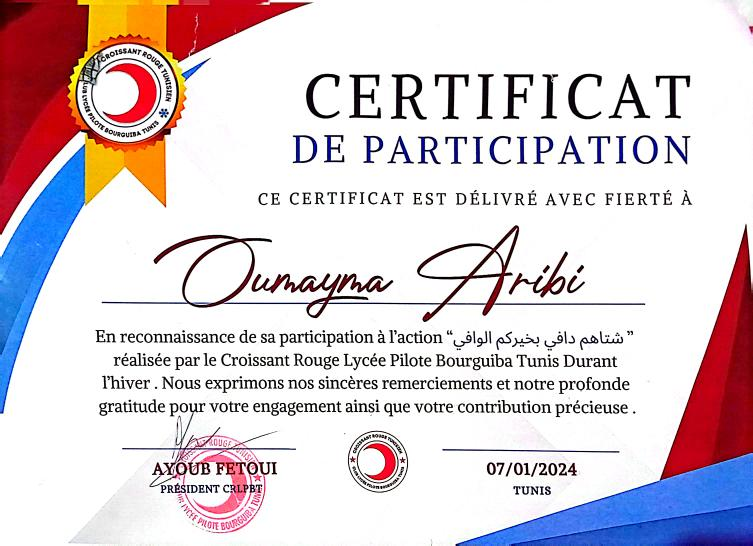
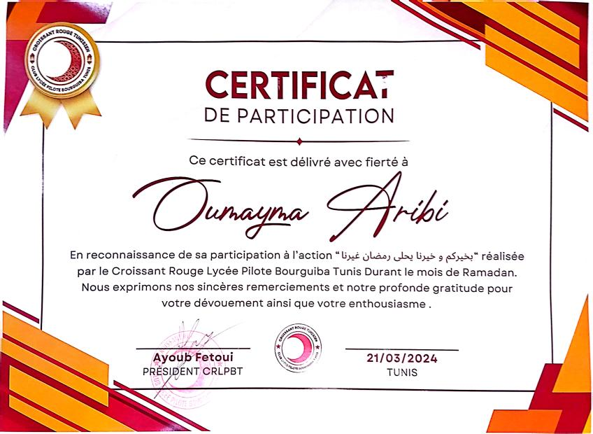

About me:
My name is Oumayma, and I’m a 17-year-old student at Farhat Hached High School in Rades. I am a motivated and organized individual with strong communication skills and a passion for technology and art. I aim to develop my skills in computer science and gain valuable experience that will aid in my future career. Eager to learn and adapt to new challenges, I believe these qualities will help me thrive in a fast-paced environment.
Interests and Aspirations:
about Technology and Art: Actively exploring online resources and tutorials to enhance my skills in computer science and digital art.
Aiming for Personal Growth: Focused on self-improvement and eager to take on new challenges to expand my knowledge and abilities.
Dedicated Learner: Committed to maintaining good grades and balancing my academic responsibilities with personal interests.
Education:
September 2019--June 2022: Megrine's pionner middle school.
September 2022--June 2023: Jendouba's pionner high school.
September 2023--June 2024: Borguiba's pionner high school.
September 2024--Present: Farhat Hached High School, Rades.
Activities: Member of the Tunisian Red Cresent, where I contribute to community service and humanitarian initiatives, enhancing my teamwork and communication skills while supporting those in need.
Certificates:


As part of the Tunisian Red Crescent, I was recognized for my active involvment in the 'Warm Winter' and 'Ramadan' initiatives, helping to support community outreach.